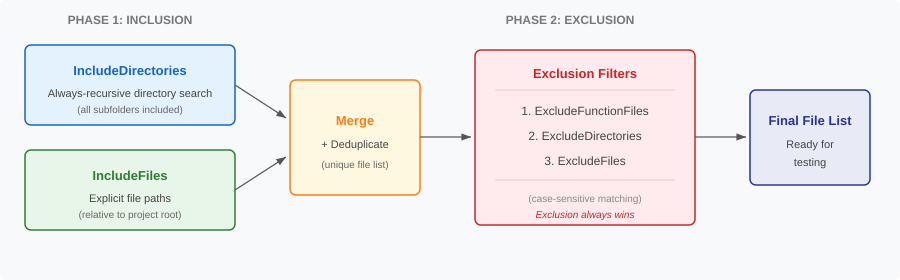

Configuration Guide
Complete reference for creating, customizing, and understanding testConfig.m files
Overview
The test framework is driven entirely by configuration files. Each file named
testConfig_<Name>.m in the Test/ folder defines
a test subset — an independent, self-contained collection of
Simulink models, workflow scripts, custom tests, and coverage targets that are
tested together and produce their own reports.
The configuration function returns a single struct config with a required
ProjectRoot field and five top-level sections:
| Section | Purpose |
|---|---|
config.ProjectRoot | Absolute path to the project root directory (required) |
config.Models | Which Simulink models to load and simulate (smoke test) |
config.Workflows | Which MATLAB scripts to execute and verify run warning-free |
config.CustomTests | Additional matlab.unittest.TestCase classes to include |
config.CodeCoverage | Which production source files to measure code coverage on |
config.Reports | What report artifacts to generate and where to store them |
config.SuppressedWarnings | Warning IDs to suppress during smoke test execution |
You can have as many test subsets as you need. The framework treats each config file independently.
Anatomy of a Config File
A minimal config file looks like this:
function config = testConfig()
% testConfig - Test configuration
%% Project Root
config.ProjectRoot = "C:/absolute/path/to/project-root";
%% Model Discovery
config.Models.IncludeDirectories = "Models";
config.Models.IncludeFiles = string.empty;
config.Models.FileTypes = ["SLX-file"; "MDL-file"];
config.Models.ExcludeDirectories = string.empty;
config.Models.ExcludeFiles = string.empty;
%% Workflow Discovery
config.Workflows.IncludeDirectories = "Workflow";
config.Workflows.IncludeFiles = string.empty;
config.Workflows.FileTypes = ["MLX-file"; "M-file"];
config.Workflows.ExcludeDirectories = string.empty;
config.Workflows.ExcludeFiles = string.empty;
%% Custom Tests
config.CustomTests.Files = string.empty;
config.CustomTests.Directories = string.empty;
%% Code Coverage
config.CodeCoverage.IncludeDirectories = ".";
config.CodeCoverage.IncludeFiles = string.empty;
config.CodeCoverage.FileTypes = ["M-file"; "MLX-file"];
config.CodeCoverage.ExcludeDirectories = "Test";
config.CodeCoverage.ExcludeFiles = "buildfile.m";
%% Reporting
config.Reports.FolderName = "MySubset";
config.Reports.GenerateJUnitXML = true;
config.Reports.GenerateHTMLReport = true;
config.Reports.GenerateCodeCoverage = true;
config.Reports.OpenInBrowser = false;
%% Warning Suppression
config.SuppressedWarnings = string.empty;
endNote: Every field must be assigned. Use string.empty for fields you don't need.
Two-Phase Discovery Pipeline
The Models, Workflows, and CodeCoverage sections
all use the same two-phase file discovery pipeline, implemented in
TestFileDiscovery.find(). Understanding this pipeline is essential for
writing effective configurations.
Phase 1: Inclusion (Building the Candidate List)
Two sources contribute files to a single unified candidate list:
-
Recursive directory search (
IncludeDirectories) — Each entry is a directory path relative to the project root. The framework searches that directory and all subfolders recursively for files matching the specifiedFileTypes."Models"— recursively search Models and all its subfolders"Components"— recursively search all subdirectories under Components"."— search the entire project tree
-
Explicit file list (
IncludeFiles) — Each entry is a file path relative to the project root that is added directly to the candidate list."Scripts/setup.m"— include a specific file by path"Utilities/helper.mlx"— include a file outside the search directories
Both sources are merged into one list and deduplicated with unique().
Phase 2: Exclusion (Filtering the Candidate List)
Three filters are applied sequentially to remove unwanted files:
-
Function file filtering (
ExcludeFunctionFiles) — Removes any.mfile whose first non-comment, non-blank line is afunctiondeclaration. Applied automatically for workflow discovery. -
Directory exclusion (
ExcludeDirectories) — Each entry is a directory path relative to the project root. Any file that resides under that directory (including all subfolders) is removed. -
File exclusion (
ExcludeFiles) — Each entry is a file path relative to the project root. Removes any file whose relative path matches one of the specified entries.
Warning: Exclusion always wins. If a file appears in both
IncludeFiles and ExcludeFiles, it will be excluded.
There is no way to "force include" a file past the exclusion filters.
Discovery Pipeline Diagram

Models Section
The Models section tells the framework which Simulink models to smoke test. A smoke test loads the model into memory and runs a simulation. If the model fails to load or simulate, the test fails.
| Field | Type | Description |
|---|---|---|
IncludeDirectories | string array | Directories (relative to project root) to search for model files. Each directory is searched recursively. |
IncludeFiles | string array | Specific model file paths to include directly. |
FileTypes | string array | Use "SLX-file" for .slx models and "MDL-file" for legacy .mdl models. |
ExcludeDirectories | string array | Directory paths relative to the project root to exclude. Any model under these directories is removed. |
ExcludeFiles | string array | File paths relative to the project root to exclude. |
What constitutes a model smoke test?
- The model is loaded with
load_system() - The model is simulated with
sim()using default parameters - If either step throws an error, the test point fails
- Warnings do not cause model tests to fail — only errors do
Workflows Section
The Workflows section identifies MATLAB scripts that should execute successfully without errors or warnings. The framework verifies that they still work as a form of regression testing.
| Field | Type | Description |
|---|---|---|
IncludeDirectories | string array | Directories to search for workflow scripts (always recursive). |
IncludeFiles | string array | Specific script paths to include. Subject to exclusion filters. |
FileTypes | string array | "MLX-file" for Live Scripts, "M-file" for plain MATLAB scripts. |
ExcludeDirectories | string array | Directory paths relative to project root to exclude from workflow discovery. |
ExcludeFiles | string array | Script file paths (relative to project root) to exclude. |
What constitutes a workflow test?
- The script is executed with
run()in the base workspace - Execution is wrapped inside
verifyWarningFree() - If the script errors or produces warnings, the test point fails
- Variables created by scripts persist in the base workspace after execution
- Scripts that require interactive input will hang the test runner — exclude them
Custom Tests Section
Beyond smoke tests, you may have dedicated
matlab.unittest.TestCase classes that test specific functionality.
The Custom Tests section lets you include these alongside the automated smoke tests.
| Field | Type | Description |
|---|---|---|
Files | string array | Relative paths to individual TestCase .m files. Each file is loaded via TestSuite.fromFile(). |
Directories | string array | Relative paths to folders. All TestCase classes found in each folder are discovered via TestSuite.fromFolder(). |
Note: Custom test classes receive no arguments from the framework. They must be fully self-contained.
Code Coverage Section
The Code Coverage section defines which production source files should be instrumented for coverage measurement during test execution.
| Field | Type | Description |
|---|---|---|
IncludeDirectories | string array | Directories to search recursively for source files. Use "." to search the entire project. |
IncludeFiles | string array | Additional source files to add to coverage measurement. |
FileTypes | string array | "M-file" and "MLX-file" for MATLAB source code. |
ExcludeDirectories | string array | Directory paths relative to project root to exclude from coverage. Typically "Test". |
ExcludeFiles | string array | File paths relative to the project root to exclude from coverage. |
Warning: The coverage section defines which files are measured, not which files are tested. A file can appear in coverage results with 0% coverage if no test happens to exercise it.
Reports Section
Controls what report artifacts are generated after tests complete, and where they are stored.
| Field | Type | Description |
|---|---|---|
FolderName | string | Subfolder name under Test/ProjectTestReport/. Reports for this subset are written here. |
GenerateJUnitXML | logical | Produce a JUnit-format XML results file. Required for CI/CD pipelines. |
GenerateHTMLReport | logical | Produce an interactive HTML test results report. |
GenerateCodeCoverage | logical | Produce an HTML code coverage report. |
OpenInBrowser | logical | Automatically open the coverage report in the system browser after tests complete. |
Report output location
Test/ProjectTestReport/<FolderName>/
├── TestResults_<release>.xml % if GenerateJUnitXML = true
├── TestReport_<release>.html % if GenerateHTMLReport = true
└── CodeCoverage_<release>/ % if GenerateCodeCoverage = true
└── CoverageReport_<release>.htmlWarning Suppression
Some models and scripts produce known, benign MATLAB warnings during execution.
Since workflow tests use verifyWarningFree(), these warnings cause test
failures. The SuppressedWarnings field lets you suppress specific
warning IDs during smoke test execution.
| Field | Type | Description |
|---|---|---|
SuppressedWarnings | string array | MATLAB warning identifiers to suppress during smoke test execution.
Use string.empty to suppress nothing. |
How it works
- The framework applies
SuppressedWarningsFixturefor all listed warning IDs at the start of the smoke tests. - Warnings are restored automatically after all smoke tests complete.
- This affects model simulation and workflow script tests only.
- Custom tests are not affected.
Finding warning IDs
To identify a warning ID, run your model or script and observe the
warning message. Then use [~, id] = lastwarn to retrieve
the warning identifier.
Examples
% Suppress a single warning
config.SuppressedWarnings = "MATLAB:hg:AutoSoftwareOpenGL";
% Suppress multiple warnings
config.SuppressedWarnings = ["MATLAB:hg:AutoSoftwareOpenGL"; ...
"Simulink:Engine:SolverConsistency"; ...
"MATLAB:nearlySingularMatrix"];
% Suppress nothing (all warnings active)
config.SuppressedWarnings = string.empty;Warning: Use sparingly. Suppressing warnings hides potential issues. Only suppress warnings that are genuinely benign and well-understood.
Creating a New Test Subset
Follow these steps to add a new test subset to your project:
- Copy an existing config file — Start from a working config to ensure you have all required fields.
- Rename the file — Name it
testConfig_<2>.m(or any descriptive name). - Update the function name — The function name on line 1 must match the file name exactly.
- Configure directories — Point
IncludeDirectoriesat the directories relevant to this subset. - Set exclusions — Add any models, scripts, or directories that should not be tested.
- Set the report folder —
config.Reports.FolderNameshould match the subset name. - Register the build task (optional) — If your project uses
buildfile.m, the framework automatically discovers new config files. -
Verify with a dry run —
config = testConfig_<2>(); TestExecutor.dryRun(config);
Best Practices
- Keep subsets focused. Group by component, layer, or test type.
- Use narrow directories.
"."searches the entire project tree and is slow on large repos. - Exclude test infrastructure from coverage. Always add
"Test"toconfig.CodeCoverage.ExcludeDirectories. - Function files are automatically excluded from workflow tests.
- Use
IncludeFilessparingly. Prefer directory-based discovery. - Run
dryRun()before committing. Verify the resolved file list matches your expectations. - Set
OpenInBrowser = falsefor CI. Headless CI runners have no browser.
Examples
Test only models in a specific component
config.Models.IncludeDirectories = "Components/Thermal";
config.Models.FileTypes = ["SLX-file"];
% Only .slx files under Components/Thermal/ and its subfoldersExclude work-in-progress models
config.Models.ExcludeDirectories = ["Models/wip"; "Models/experimental"];
config.Models.ExcludeFiles = ["Models/draft_controller.slx"];Include a specific file that lives outside search directories
config.Models.IncludeDirectories = "Components/HarnessModels";
config.Models.IncludeFiles = ["Integration/system_level_model.slx"];
% Both the HarnessModels folder AND the specific integration model are testedDemonstrate that exclusion wins over inclusion
config.Models.IncludeFiles = ["Archive/old_model.slx"];
config.Models.ExcludeDirectories = "Archive";
% Result: old_model.slx is NOT tested (exclusion wins)Workflow subset that excludes interactive scripts
config.Workflows.IncludeDirectories = ["Workflow"; "Scripts"];
config.Workflows.ExcludeFiles = ["Workflow/interactiveSetup.m"; "Workflow/manualCalibration.mlx"];Coverage on a specific subsystem only
config.CodeCoverage.IncludeDirectories = ["Components/Controller"; "Components/Estimator"];
config.CodeCoverage.ExcludeDirectories = "Test";Add custom regression tests
config.CustomTests.Files = ["Test/Regression/ControllerRegression.m"];
config.CustomTests.Directories = ["Test/Integration"];Troubleshooting
My file isn't being discovered
- Run
TestExecutor.dryRun(config)and check the resolved file list. - Verify the file's path matches at least one entry in
IncludeDirectoriesorIncludeFiles. - Verify the file's type matches
FileTypes. - Check that the file isn't excluded by
ExcludeDirectoriesorExcludeFiles. - For workflow discovery, function files are automatically excluded.
A file is being tested that shouldn't be
- Add its directory to
ExcludeDirectories, or - Add its relative path to
ExcludeFiles.
Tests pass locally but fail in CI
- Ensure
OpenInBrowser = falsein the config used by CI. - Verify all required toolboxes are available on the CI runner.
- Check that model dependencies are on the MATLAB path.
Coverage report shows 0% for a file I know is tested
- The file must appear in
config.CodeCoverageresolved list (check with dry run). - The file's type must match
config.CodeCoverage.FileTypes. - Ensure the file isn't excluded by the coverage section's ignore filters.
See Also: Framework Reference | Getting Started